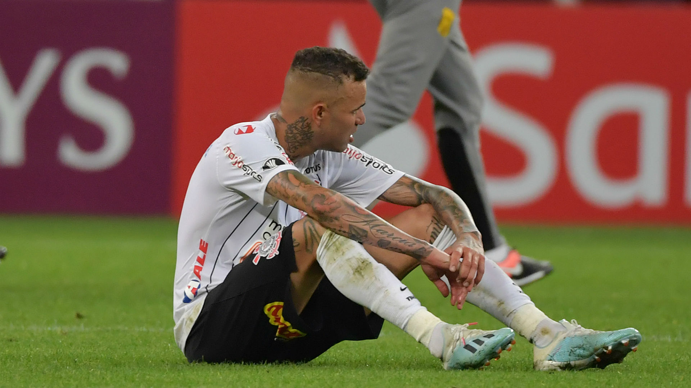
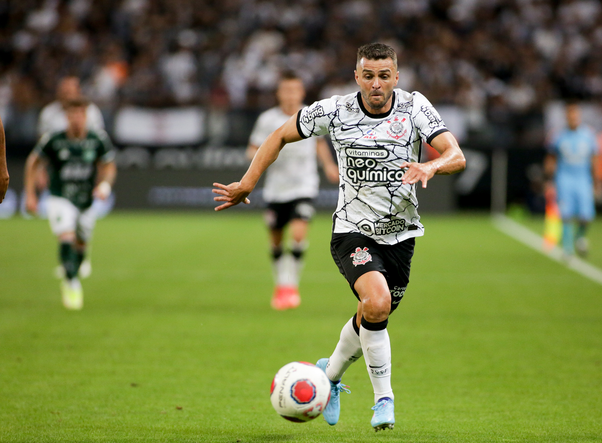
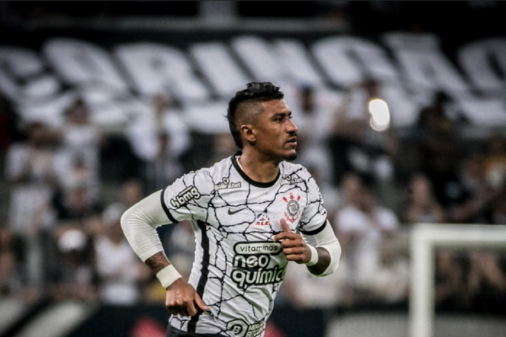
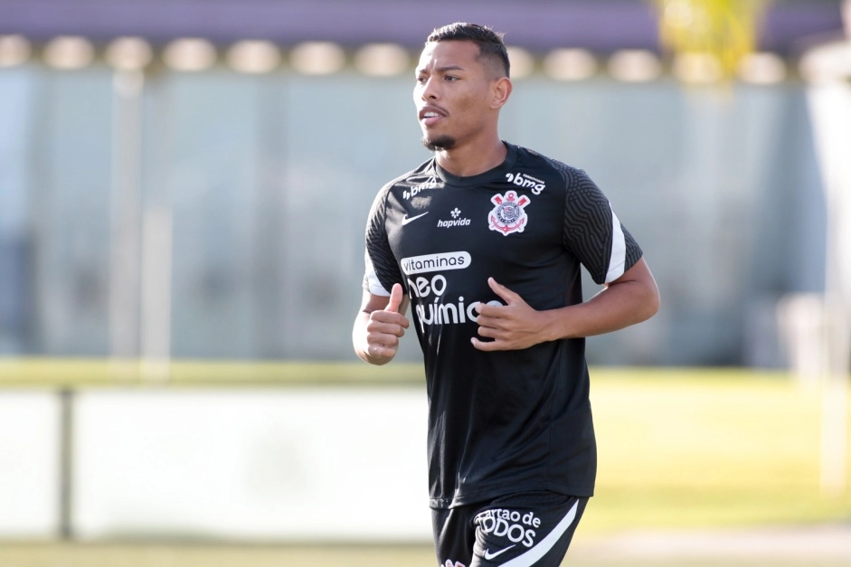

Clique Aqui para voltar
Clique Aqui para voltar
Confira os atletas que estão "desaparecidos" dos gramados alvinegros
Muitos jogadores não vem atuando pelo clube. O que está acontecendo?
No atual elenco, temos muitos jogadores badalados anteriormente, que infelizmente não estão tendo oportunidades nos jogos pelo Corinthians. A seguir, segue lista com motivos
1.Luan Guilherme
O atleta Luan Guilherme chegou ao Corinthians no início da temporada de 2020, sendo a principal contratação do time para a temporada; o jogador até teve um bom início de temporada, porém, com o tempo, suas atuações deixaram a desejar, e a torcida começou a cobrar melhores atuações do atleta. Todos técnicos que vieram para gerir o clube tentavam fazer o jogador jogar, pois além das combranças da torcida, o craque recebia cerca de R$700 mil por mês, então tinha também uma pressão da diretoria. Com atuações ruins, o técnico de 2022, Vitor Pereira decidiu não utilizá-lo na temporada, então o jogador teve poucos minutos em campo. Na atual temporada, o clube anunciou que nao irá usá-lo, pois o jogador demostra falta de interesse e comprometimento nos treinos, e assim, é uma das maiores decepções do clube.
2.Junior Moraes
O jogador veio no meio da temporada de 2022, por meio de recomendação da diretoria. Uma contratação que foi fácil por conta da cláusula de guerra que os clubes da Ucrânia tinham, onde os jogadores poderiam sair de graça, então o Timão foi atrás do atleta para reforçar o ataque, que na época, não tinha nenhum nome de destaque. Junior veio deixando a torcida com a expectativa alta, porém, o atleta não conseguiu entregar o futebol que desejava por conta do alto número de lesões, prejudicando a continuidade de partidas. Com isso, o jogador busca novas oportunidades na atual temporada, visando brigar pela titularidade com Róger Guedes e Yuri Alberto.
3.Paulinho
O ídolo Paulinho, que já rodou o mundo inteiro e conquistou títulos importantes pelo Corinthians(Brasileirão 2011, Copa Libertadores 2012, Mundial de Clubes 2012 e Paulistão 2013), voltou à sua casa no final da temporada de 2021, sendo um grande reforço para equipe, atuou em parte de 2022 e rompeu o ligamento cruzado de seu joelho em maio. Com isso, foram mais de 9 meses de tratamento, perdendo a temporada de 2022. O atleta faz falta para a torcida, pois atua em uma função em que o elenco tem "fraquezas" e deve voltar agora em 2023, para matar a saudade da torcida alvinegra .
4.Ruan Oliveira
A jóia do terrão vinha atuando em boa parte da temporada de 2022, quando teve uma grave lesão no seu joelho esquerdo, assim, precisando de uma intervenção cirúrgica, perdendo o restante da temporada de 2022. O atleta vinha se firmando no elenco, e por ser um jogador jovem, tinha ambições de jogar fora do país, porém a lesão adiou seu sonho. Com isso, o jogador completa mais de 6 meses fora dos gramados, e deve retornar em 2023.
Escrito por Gian Fachini, 24/01